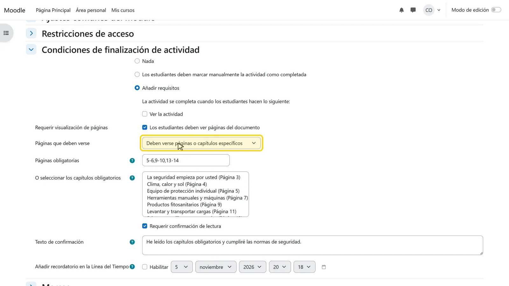
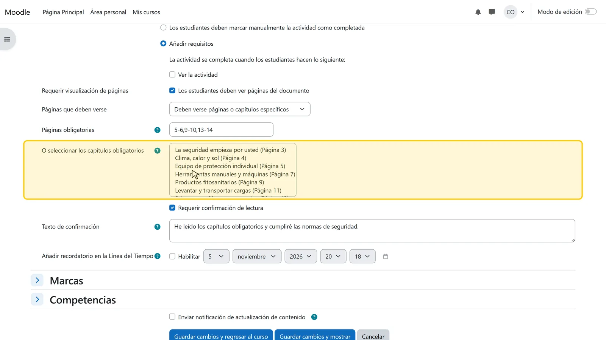
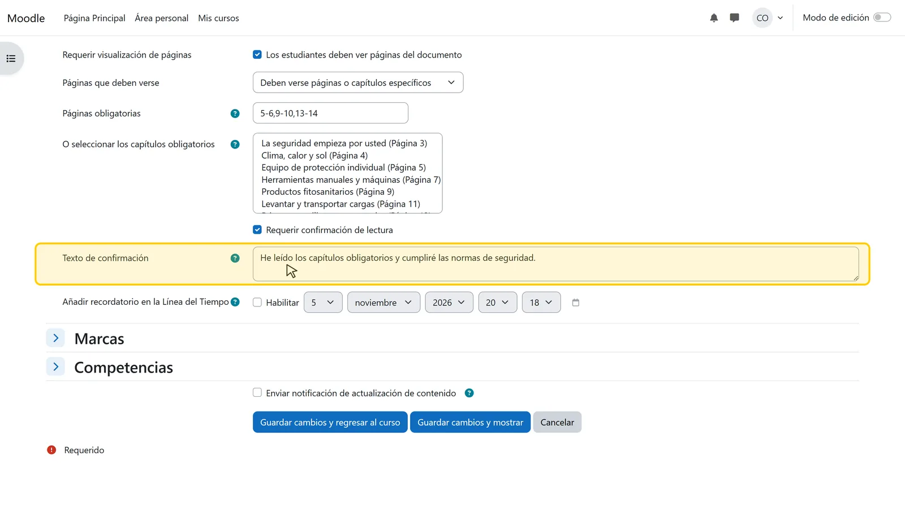
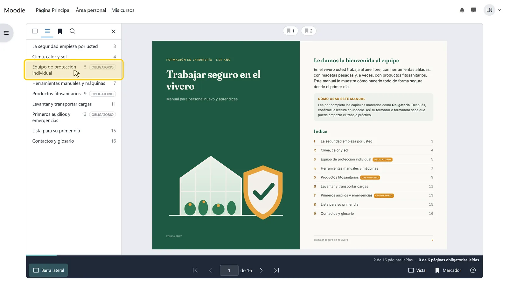
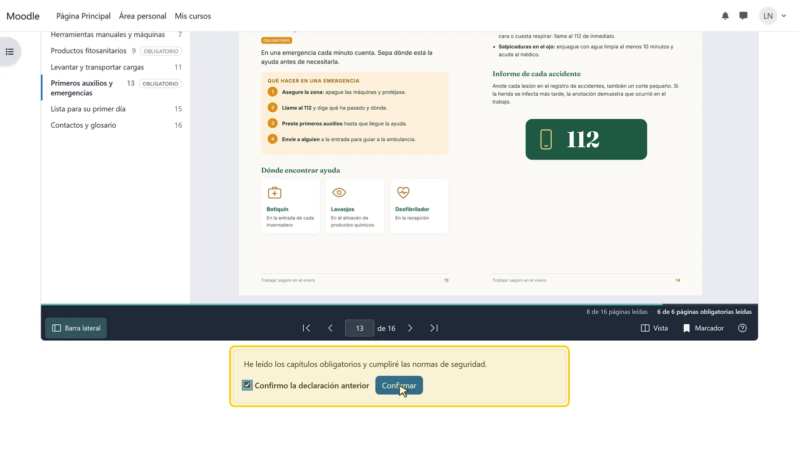
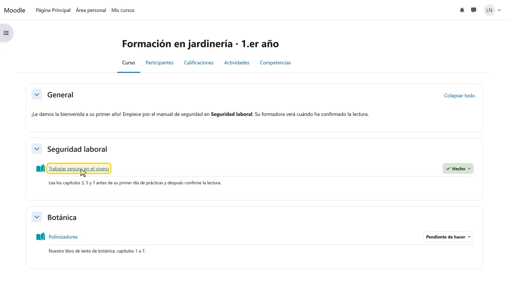

Cómo exigir la lectura y una confirmación de lectura en Moodle
En instrucciones de seguridad, normativas internas o manuales de acogida, «el archivo se abrió» demuestra poco, y es lo único que Moodle registra cuando se usa un recurso «Archivo». Con Leafr usted indica qué capítulos hay que leer y añade una declaración que los estudiantes confirman después. Moodle da la actividad por completada solo cuando se cumplen las dos condiciones.
Actualizado el 5 de noviembre de 2026
Qué necesita
- Una actividad Leafr con el PDF (vea Cómo mostrar un PDF como flipbook)
- La opción «Habilitar seguimiento del grado de finalización» activada en la configuración del curso
- Capítulos guardados en la actividad, si prefiere elegir capítulos en lugar de escribir números de página
Paso a paso
-

Paso 1 de 6Elegir la regla de finalización
Abra la configuración de la actividad y vaya a Condiciones de finalización de actividad. Elija Añadir requisitos, marque Los estudiantes deben ver páginas del documento y, en Páginas que deben verse, elija Deben verse páginas o capítulos específicos.
-

Paso 2 de 6Indicar páginas o capítulos
Escriba las páginas en Páginas obligatorias, por ejemplo «5-6, 9-10, 13-14», o seleccione capítulos enteros en O seleccionar los capítulos obligatorios (mantenga pulsada la tecla Ctrl o Cmd para elegir varios). Al guardar, Leafr añade las páginas de esos capítulos.
-

Paso 3 de 6Escribir el texto de confirmación
Marque Requerir confirmación de lectura y escriba la declaración que confirmarán los estudiantes, por ejemplo: «He leído los capítulos obligatorios y cumpliré las normas de seguridad». Después, guarde.
-

Paso 4 de 6Los estudiantes ven qué es obligatorio
En el índice, los capítulos obligatorios llevan la etiqueta Obligatorio. Debajo del libro, un contador indica cuántas páginas obligatorias se han leído, por ejemplo «2 de 6 páginas obligatorias leídas».
-

Paso 5 de 6Confirmar después de leer
Cuando se han visto todas las páginas obligatorias, aparece la confirmación debajo del libro. El estudiante marca Confirmo la declaración anterior y pulsa Confirmar. Leafr guarda la fecha y la hora.
-

Paso 6 de 6Actividad completada
En la página del curso, la actividad aparece ahora como Hecho. Las restricciones de acceso, las insignias y la finalización del curso pueden basarse en ella como en cualquier otra actividad.
Conviene saber
Qué significa «vista»
Una página cuenta como vista cuando se ha mostrado en pantalla. Leafr no mide el tiempo de lectura, a propósito. La confirmación es la declaración del propio estudiante de que ha leído el documento.
Sin confirmación anticipada
Mientras falten páginas obligatorias por ver, Leafr no acepta la confirmación, ni siquiera mediante una petición manipulada.
Cambiar la regla más tarde
En cuanto hay datos de finalización de estudiantes, Moodle bloquea las condiciones de finalización. Para cambiarlas, haga clic en Desbloquear ajustes de grado de finalización. Al guardar, Moodle borra los datos de finalización y los vuelve a calcular cuando es posible.